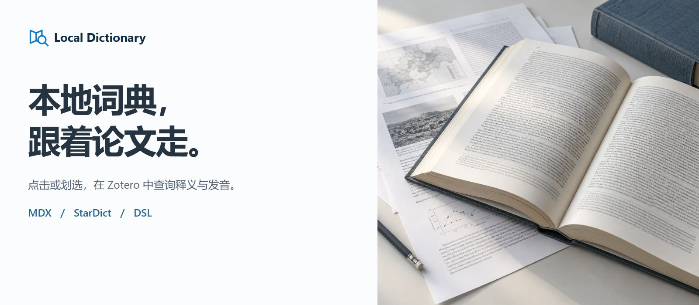
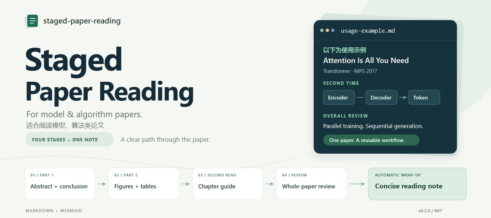

Zotero reading tool
Local DictionaryA dictionary alongside your papers.
Look up words inside Zotero with local MDX, StarDict and DSL dictionaries, preserving formatting, pronunciation and the context of your reading.
COMPUTER SCIENCE UNDERGRADUATE
Learning through code. Building tools for better reading.

I'm a second-year Computer Science and Technology undergraduate at Xi'an Jiaotong University. Here I share my learning journey and open-source projects around reading and knowledge organization.
Reading tools, thoughtful workflows and a growing learning archive.

Look up words inside Zotero with local MDX, StarDict and DSL dictionaries, preserving formatting, pronunciation and the context of your reading.

A four-stage workflow for model and algorithm papers: understand the abstract, examine figures, follow the method and keep concise notes.
Notes and exercises spanning C/C++, Python, algorithms, machine learning, deep learning and paper reading.
Staged Paper Reading is adapted from Academic Research Skills, with attribution and licensing preserved. Third-party learning materials retain their original sources.
A record of what I have learned, alongside questions I am still exploring.
C/C++, Python, data structures and algorithms, discrete mathematics and developer tools.
Browse CS notesCompleted Li Mu's Dive into Deep Learning (PyTorch). Continuing to study machine learning and the mathematics I need along the way.
Browse AI notesExploring word lookup, figure interpretation and note organization through small tools for my own learning.
Browse reading notesAbout learning, reading or something worth building.